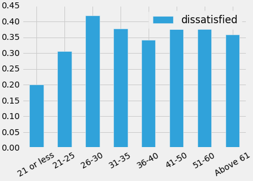
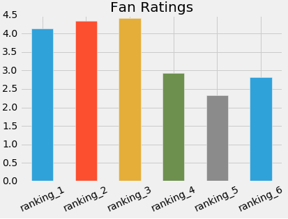
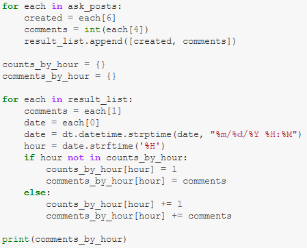
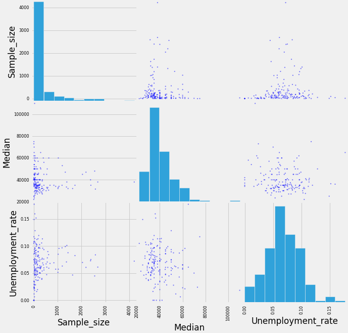

Employee Exit Survey Analysis
Generally, it's critical for a company to understand the factors that make employees leave. In the event that an employee leaves citing grievances with the company, the management should be alert as to whether this trend repeats among other employees, and if so, they should understand what kind of employee might be most likely to feel that way, and how they could go about addressing any underlying issues. This project sees us analyzing what kind of employees might be most likely to leave over their frustrations.

Star Wars Survey Review Analysis
Star Wars: Episode V - The Empire Strikes Back is widely thought of as the best movie of the franchise, but is this just based on hearsay, or is there hard data backing that up? In this project, sentiments of movie-goers about the Star Wars franchise were analyzed!
Investigating Relationship of SAT scores with Student Demographics
Relationships between the average SAT scores of High School students in NYC, and variables such as race and gender compositions were explored. The relationship of student's perceptions of safety with a school's average SAT score was also noted to be significant, after which the perceived safety of each school was plotted via geographic co-ordinates using the mpl_toolkits.basemap library.

Analysis of Hacker News Posts
Submissions on popular computer science and technology online community "Hacker News" were collected in a dataframe, cleaned, and then analyzed to find out which kinds of submissions received the most responses, and at which time of the day one should post a submission for it to gain the most traction.
Analyzing how to Maximize Advertisement Revenue in Free Apps
After a thorough data cleaning process that involved fixing several duplicate/incorrect entries, and removing entries containing apps that were either not free or not in English, the popularity, ratings, and genre information of free apps on the Apple and Google Play stores were analyzed to gain insight as to what kind of App would be most suitable for a company to make who generated most of their revenue from in-app advertisements.
Making a Customizable Connect-4 Boardgame in Python
Working in a team, the Connect-4 boardgame was re-created inside Python, designed to playable in the iPython console. The game was designed so that board size, victory conditions, and type of opponent (human or computer) were fully customizable by the player.

Investigating Earnings, Employment Rates, and Student Demographics by University Major
Employment Rates and median salaries associated with various University majors in US Universities were analyzed to understand the relationship between those factors and each major. Scatter Plots were also used to visualize things like the relationship between a Major's popularity, and the employability of its students.

Visualizing Gender Differences in University Majors over the years.
The gender compositions in various University majors were looked at over the period 1970-2010. Insights were gained as to which majors grew more balanced in gender composition over time, which ones further increased their gender discrepancy, and which majors tended to attract male or female students more.
Analysis of Car Listings on eBay
eBay Car Listings were cleaned and then analyzed to gain insight on the demographics of the cars being sold, and the correlations between variables like the brand of a car and its price. Informed conclusions behind the reasons for customer purchase behaviors were also derived.
Coursera Project Compilation
Over the course of the Applied Data Science Specialization program, several projects were done, some of which are featured here in the linked repository. House Price comparisons were done and a t-test was used to determine if the change in house prices before and after a recession was significant. Temperature records over the years 2005-2015 were visualized, and a few other custom visualizations were made in a handful of smaller projects.